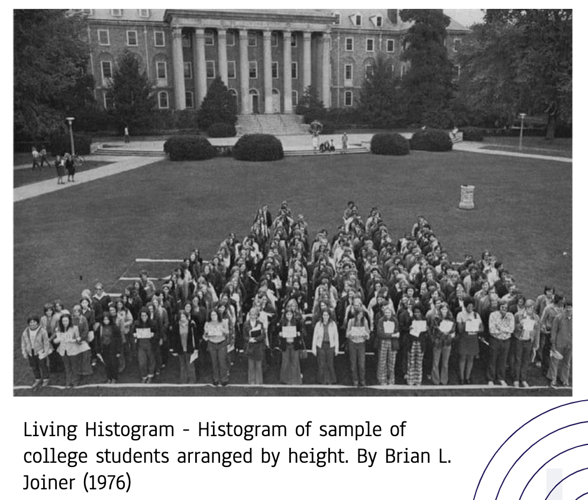
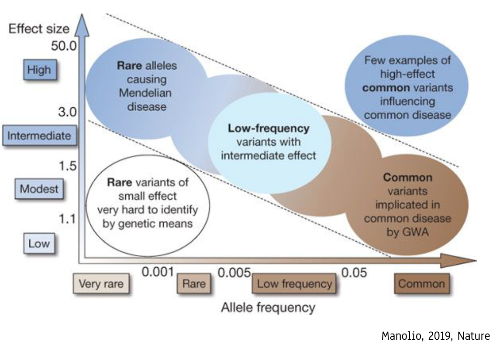
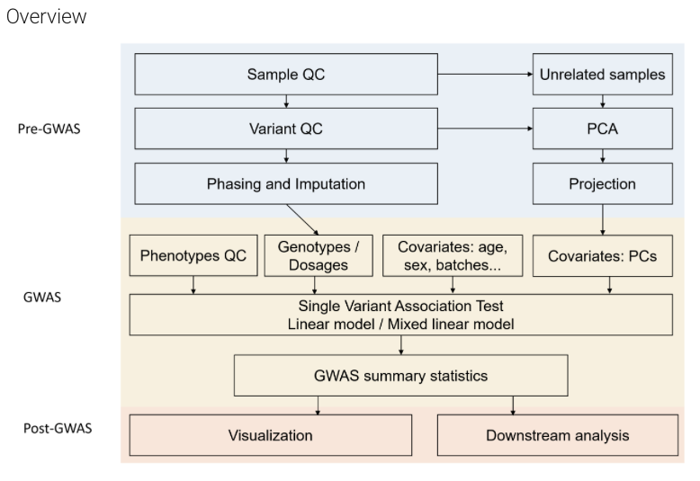
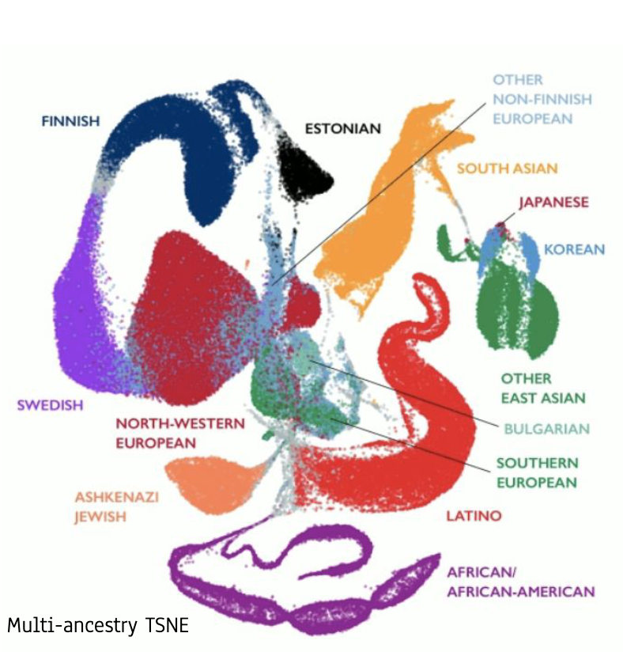
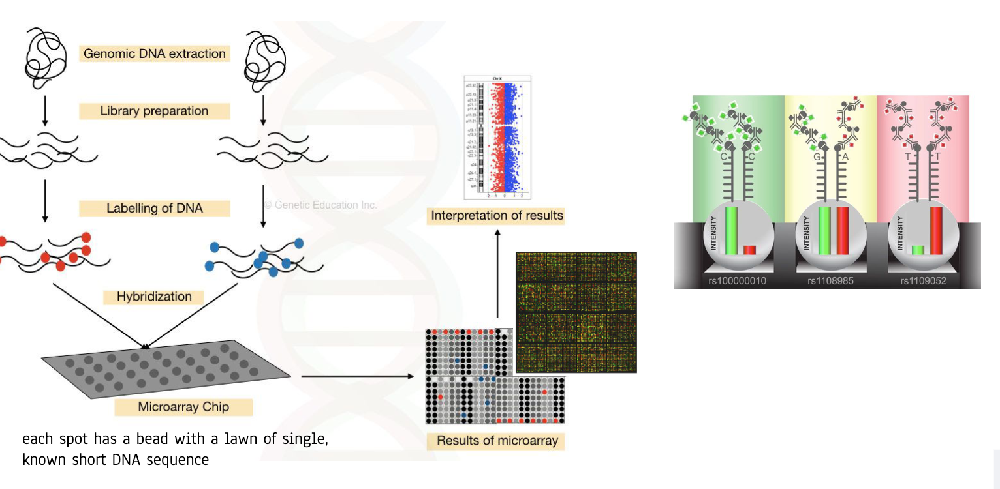
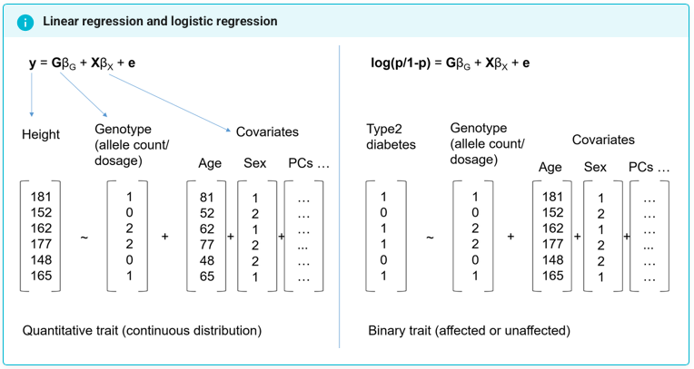
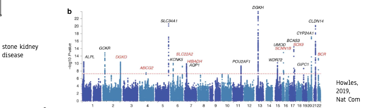
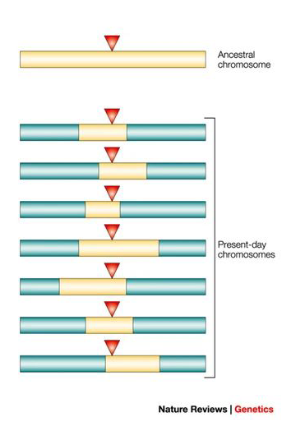
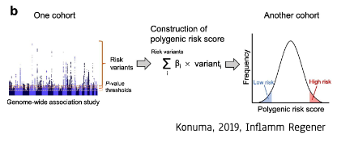

5 Основы генетики сложных признаков и GWAS
5.1 Введение
5.1.1 Исторический контекст
- 1886 год — Грегор Мендель: Изучал наследование признаков у гороха. Предположил существование дискретных переносчиков наследственной информации — генов. Ввел ключевые понятия доминантного и рецессивного признака.
- 1892 год — Гальтон и Пирсон: Заложили основы биометрии — изучения количественных, вариативно изменяющихся признаков.
5.1.2 От генов к фенотипу
- Генетический код содержит наследственную информацию, определяющую фенотип — совокупность всех наблюдаемых признаков организма.
- Информация организована в гены, расположенные на хромосомах.
5.1.3 Сложные признаки (Complex Traits)
Это признаки, на которые влияет множество факторов: как генетических (полигенных), так и внешних (среда, образ жизни). К ним относятся, например, рост, вес, предрасположенность к распространенным заболеваниям.
Из-за множества влияющих факторов такие признаки в популяции имеют непрерывное распределение (часто нормальное).

Именно сложные признаки представляют основной интерес для генетических ассоциативных исследований (GWAS).
5.1.4 Основной объект изучения: SNP
SNP (Single Nucleotide Polymorphism, снип) — однонуклеотидный полиморфизм, замена одного нуклеотида в определенной позиции генома. Изучаются чаще, чем крупные структурные варианты (делеции, инсерции, инверсии), так как встречаются значительно чаще.
Поскольку мы — диплоидные организмы (получаем по одному набору хромосом от каждого родителя), каждый генетический вариант представлен двумя аллелями. Индивидуум может быть:
- Гомозиготой (два одинаковых аллеля).
- Гетерозиготой (два разных аллеля).
5.1.5 Спектр генетических вариантов
Существует обратная зависимость между частотой встречаемости аллеля в популяции и силой его эффекта на фенотип.

- Редкие варианты с сильным эффектом (левый верхний квадрант):
- Вызывают моногенные (менделевские) заболевания.
- Для их поиска традиционно используется анализ сцепления (linkage analysis) внутри семей.
- Редкие варианты со слабым эффектом (левый нижний квадрант):
- Их вклад в сложный признак трудно определить. Для обнаружения требуются огромные выборки и методы GWAS.
- Варианты средней частоты и эффекта (центр):
- Часто проявляют эффект только во взаимодействии с другими генами или средой (эпистаз, пенетрантность).
- Частые варианты со слабым эффектом (правый нижний квадрант):
- Частота > 5%. Не являются высокопатогенными сами по себе, но их комбинации и взаимодействия вносят вклад в предрасположенность к распространенным заболеваниям.
- Частные варианты с сильным эффектом (правый верхний квадрант):
- Ключевая цель GWAS. Это варианты, которые закрепились в популяции, но существенно влияют на риск развития сложных заболеваний (диабет, сердечно-сосудистые болезни, болезнь Альцгеймера и др.).
5.2 GWAS (Genome-Wide Association Study)
5.2.1 Отличие от анализа сцепления
| Признак | Анализ сцепления (Linkage) | GWAS (Ассоциация) |
|---|---|---|
| Применение | Моногенные, редкие (часто орфанные) заболевания | Сложные, полигенные, распространенные признаки/болезни |
| Выборка | Члены одной или нескольких семей | Большие, несвязанные популяционные выборки (случаи и контроли) |
| Разрешение | Низкое (определяется рекомбинациями в семье) | Высокое (на уровне отдельных вариантов, SNP) |
| Гипотеза | Часто есть гипотеза о гене-кандидате или локусы известны | Гипотеза отсутствует — скрининг всего генома |
| Стат. мощность | Ниже для сложных признаков | Выше при больших выборках |
5.2.2 Преимущества и цели GWAS
- Высокая статистическая мощность (при больших выборках).
- Высокое разрешение — можно выделить конкретные геномные локусы.
- Гипотеза-независимый подход — анализ всех вариантов на равных.
- Цель: Обнаружить статистически значимую связь между генотипом в конкретном локусе и признаком/заболеванием.
- Дальнейший анализ: Интерпретация ассоциированных локусов позволяет выдвигать гипотезы о новых биологических путях и механизмах развития признака.
5.2.3 Требования для проведения GWAS
- Референсный геном и каталог генетических вариантов.
- Доступные технологии генотипирования (NGS, микрочипы).
- Большие размеры выборок (тысячи и десятки тысяч индивидуумов) для достижения достаточной статистической мощности.
- Корректный дизайн исследования и продвинутые статистические методы.
5.3 Основные шаги GWAS
- Подготовительная фаза
- Дизайн исследования: Определение цели, мощности выборки
- Сбор выборки: Балансировка кейсов и контролей по полу, возрасту, происхождению
- Фенотипирование: Точное измерение признаков (количественных или бинарных)
- Pre-GWAS (Контроль качества данных)
- Контроль качества образцов: Исключение низкокачественных, загрязненных, родственных
- Контроль качества вариантов
- Импутация: Восстановление недостающих данных через референсные панели
- GWAS (Статистический анализ)
- Генотипирование: WGS (полное) или микрочипы (таргетное)
- Поправки: На популяционную стратификацию (PCA)
- Модели: Линейная/логистическая регрессия с учетом ковариат
- Коррекция: Строгий порог значимости 5×10⁻⁸ из-за множественного тестирования
- Post-GWAS (Интерпретация результатов)
- Визуализация: Манхеттен-плот для выявления значимых локусов
- Полигенные шкалы: Расчет индивидуальных рисков PRS
- Валидация: Проверка на независимой когорте
- Функциональный анализ ассоциированных генов
- Построение молекулярных путей и сетей
- Формулирование новых гипотез

5.3.1 Подготовительная фаза
5.3.1.1 Группа пациентов
Предпочтительны индивидуумы с ярко выраженным фенотипом, ранним началом заболевания или семейной историей.
5.3.1.2 Контрольная группа
- Должна максимально соответствовать группе случаев по полу, возрасту, этническому происхождению.
- Не должна иметь изучаемого признака/заболевания.
5.3.1.3 Популяционная стратификация
Это систематическая разница в частотах аллелей между группами случаев и контролей, вызванная не ассоциацией с болезнью, а различиями в происхождении (ancestry).

Решение:
- Набирать когорты из генетически однородной популяции.
- Использовать методы коррекции (например, включать главные компоненты PCA в качестве ковариат в статистическую модель).
5.3.2 Методы генотипирования
5.3.2.1 Полногеномное секвенирование (WGS)
- Получение полной последовательности ДНК.
- Дорого, но дает исчерпывающую информацию обо всех типах вариантов.
5.3.2.2 Микрочипы для генотипирования (Microarray)
- Анализ предопределенного набора SNP (от 100 тыс. до 5 млн).
- Значительно дешевле WGS.
- Использует специальные зонды (олигонуклеотиды), прикрепленные к чипу, для детекции конкретных аллелей.

5.3.3 Tag-SNP и гаплотипы
Гены и участки ДНК часто наследуются блоками — гаплотипами. Tag-SNP — это один или несколько SNP, которые “помечают” такой гаплотип и позволяют отслеживать его в популяции, не секвенируя весь блок. Это основа для эффективного дизайна микрочипов.
5.3.4 Импутация генотипов
- Проблема: Микрочип определяет лишь часть всех существующих SNP.
- Решение — Импутация: Используя эталонные панели гаплотипов (например, проекта “1000 геномов”) и известные закономерности сцепления, можно статистически предсказать (импутировать) генотипы в непротипированных позициях.
- Результат: Из 500 тыс. реально отгенотипированных SNP можно получить информацию о 10-20 млн вариантов, что резко повышает мощность исследования.
5.3.5 Контроль качества (Quality Control) в GWAS
Корректный контроль качества данных — критически важный этап перед статистическим анализом. Он проводится на двух уровнях: образцы (индивидуумы) и варианты (SNP).
5.3.5.1 Контроль качества образцов (Sample QC)
Образцы исключаются из анализа при обнаружении следующих проблем:
- Низкий процент генотипирования (call rate): Если для образца успешно определено менее 95-98% SNP, это указывает на проблемы с качеством ДНК (испорченный образец крови/слюны) или с процессом генотипирования.
- Избыточная гетерозиготность: Неожиданно высокий уровень гетерозиготных генотипов по всему геному часто сигнализирует о загрязнении образца ДНК другого человека или о техническом артефакте.
- Несоответствие пола: Рассчитанный по генетическим маркерам пол (например, по гомозиготности в X-хромосоме) не совпадает с заявленным в аннотации.
- Скрытое родство и дубликаты: Наличие генетически близких индивидуумов (родственников) искажает статистику.
- Решение: Попарное сравнение генетической идентичности (Identity-by-Descent, IBD). Если пара образцов имеет высокую долю идентичных аллелей (как у родственников), один из них исключается.
- Также удаляются полные дубликаты одного и того же человека.
- Выбросы по популяционной структуре: Индивидуумы, генетически сильно отличающиеся от основной массы выборки (выпадающие за пределы кластеров на графике PCA), могут исказить результаты из-за стратификации.
5.3.5.2 Контроль качества вариантов (Variant QC)
SNP исключаются из дальнейшего анализа по следующим критериям:
- Низкий процент генотипирования: SNP, для которого генотип не удалось определить у большой доли образцов (например, >5%).
- Отклонение от известной частоты в популяции
5.3.6 Статистический анализ ассоциаций
5.3.6.1 Отношение шансов (Odds Ratio, OR)
Для бинарных признаков (болезнь/здоровье) простой мерой связи является отношение шансов:
\[ \text{Odds Ratio (OR)} = \frac{(\text{Case}_{C} / \text{Case}_{A})}{(\text{Control}_{C} / \text{Control}_{A})} \] Где \(C\) и \(A\) — аллели варианта.
Ограничение: Простой OR не учитывает влияние ковариат (пол, возраст, генетическая структура популяции) и не предполагает конкретной генетической модели наследования (аддитивная, доминантная, рецессивная).
5.3.6.2 Регрессионные модели
Для учета ковариат и различных генетических моделей в GWAS применяются обобщенные линейные модели.
5.3.6.2.1 Линейная регрессия (для количественных признаков)
Используется для признаков в непрерывной шкале (рост, уровень глюкозы, ИМТ).
\[ y = G\beta_G + X\beta_X + \epsilon \]
- \(y\) — наблюдаемый количественный фенотип.
- \(G\) — матрица генотипов (кодируется как 0, 1, 2 для аддитивной модели).
- \(\beta_G\) — величина эффекта варианта на фенотип (основной результат GWAS).
- \(X\beta_X\) — поправка на ковариаты (пол, возраст, главные компоненты PCA).
- \(\epsilon\) — случайная ошибка.
5.3.6.2.2 Логистическая регрессия (для бинарных признаков)
Используется для признаков типа “есть/нет” (заболевание, наличие симптома).
\[ \log\left(\frac{p}{1-p}\right) = G\beta_G + X\beta_X + \epsilon \] Где \(p\) — вероятность наличия заболевания.

Результат анализа (например, из программы PLINK): Таблица, где для каждого SNP указаны:
- Хромосома, позиция, ID (rs-номер).
- Референсный и альтернативный аллели.
- Статистика эффекта (\(\beta\) или OR) и ее стандартная ошибка.
- P-value — вероятность наблюдать такой эффект при условии, что истинной ассоциации нет (нулевая гипотеза).
5.3.6.3 Коррекция на множественное тестирование
В GWAS мы тестируем гипотезу об ассоциации для миллионов SNP одновременно. При стандартном пороге значимости \(p < 0.05\) мы получили бы десятки тысяч ложноположительных результатов.
Решение — поправка Бонферрони: Уровень значимости делится на число независимых тестов.
\[ \alpha_{\text{GWAS}} = \frac{0.05}{\text{Число независимых тестов}} \approx \frac{0.05}{1,000,000} = 5 \times 10^{-8} \]
Почему ~1 млн тестов? Из-за явления сцепленного наследования (Linkage Disequilibrium, LD), многие SNP наследуются блоками и не являются статистически независимыми. Число “независимых” SNP в геноме человека оценивается именно в этом диапазоне.
5.4 Визуализация и интерпретация результатов
5.4.1 Манхеттен-плот (Manhattan plot)
Классический способ визуализации результатов GWAS.

- Ось X: Позиция SNP в геноме (по хромосомам).
- Ось Y: Статистическая значимость ассоциации, преобразованная как \(-log_{10}(\text{p-value})\).
- Пики над пороговой линией (\(-\log_{10}(5\times10^{-8}) \approx 7.3\)) указывают на геномные регионы, достоверно ассоциированные с признаком.
- Группы близко расположенных значимых SNP часто обусловлены LD.
5.4.2 Сцепленное наследование (Linkage Disequilibrium, LD)
Это неслучайное совместное наследование аллелей разных SNP, расположенных близко на хромосоме.

Важность: Ассоциированный SNP, обнаруженный GWAS, часто не является причинным (causal) вариантом, а лишь маркером, находящимся в LD с истинным функциональным вариантом.
5.4.3 Полигенные шкалы риска (Polygenic Risk Scores, PRS)
Суммарная статистика GWAS (оценки эффекта \(\beta\) для каждого SNP) позволяет вычислить для любого человека его полигенную оценку — численную меру генетической предрасположенности к признаку.
\[ PRS_i = \sum_{j=1}^{M} (\beta_j \times G_{ij}) \]
- \(PRS_i\) — полигенная шкала риска для индивидуума \(i\).
- \(\beta_j\) — оценка эффекта SNP \(j\) из GWAS.
- \(G_{ij}\) — генотип индивидуума \(i\) для SNP \(j\) (0, 1, 2).
- \(M\) — число SNP, включенных в расчет (часто тысячи).

5.5 Важные оговорки и проблемы
5.5.1 Ассоциация ≠ Причинность
Обнаруженная статистическая ассоциация SNP с заболеванием не доказывает, что этот SNP является причиной болезни. Он может быть:
- “Пассажиром” — находиться в LD с истинным причинным вариантом.
- Влиять на болезнь через сложные опосредованные связи.
Для установления причинно-следственных связей требуются дополнительные функциональные исследования и методы.
5.5.2 Проблема “недостающей наследственности” (Missing Heritability)
На заре GWAS возник парадокс: суммарный эффект всех обнаруженных ассоциаций объяснял лишь небольшую долю наследуемости (heritability) сложных признаков, оцененной по семейным исследованиям.
Возможные объяснения:
- Огромное число вариантов со сверхмалым эффектом, которые не достигают порога значимости в GWAS даже на очень больших выборках.
- Редкие варианты (MAF < 1%), не улавливаемые стандартными GWAS-чипами.
- Структурные варианты и эпигенетические факторы, не учитываемые в SNP-ориентированных GWAS.
- Сложные ген-геновые и ген-средовые взаимодействия.